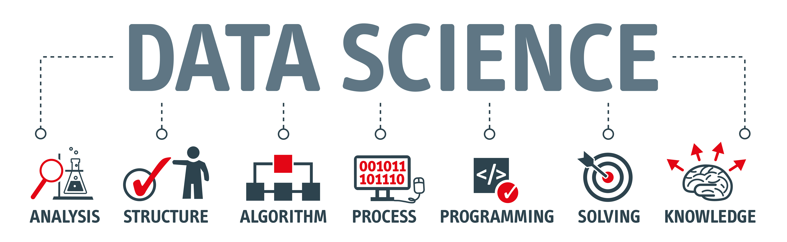

This is P8105 Data Science Job outlook final project website.
Big Data is like teenage sex: everyone talks about it, nobody really knows how to do it, everyone thinks everyone else is doing it, so everyone claims they are doing it.– Dan Ariely
According to the 2018 August Linkedin Workforce Report, there is a roaring demand for workforces with data science skills across industries in the United States. As more institutions and industry sectors rely on big data to deal with operational challenges and optimize their decisions, the shortage of well-trained personnel in data science has been reported to be 151,717. Some regions are even in acute shortage, such as New York City, San Francisco, and Los Angeles.
We are inspired by the great analysis work done and the blog edited by Shanshan Lu posted on Kaggle.
Some of the most exciting questions in our projects are: